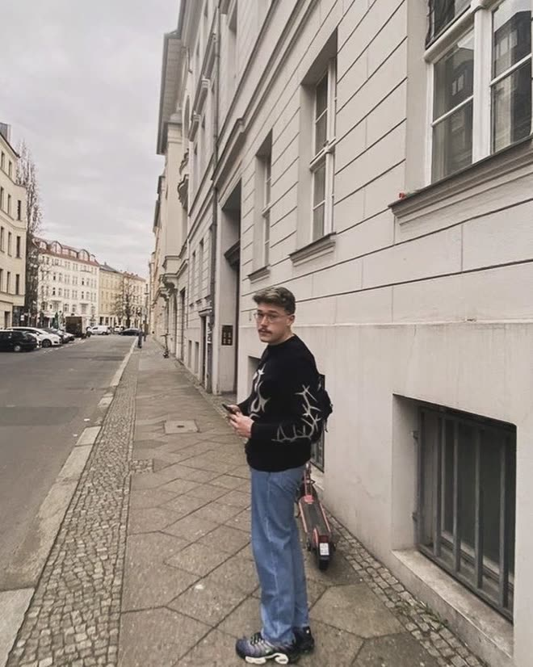
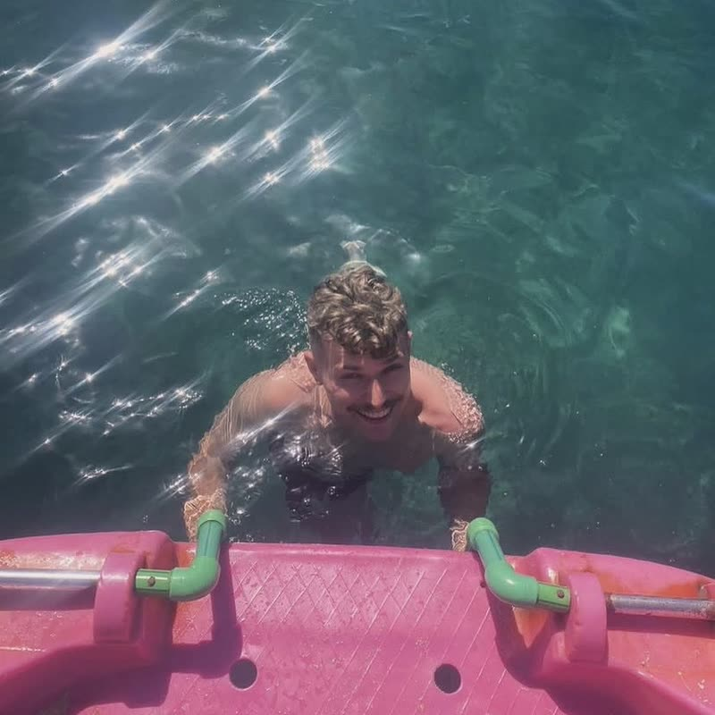
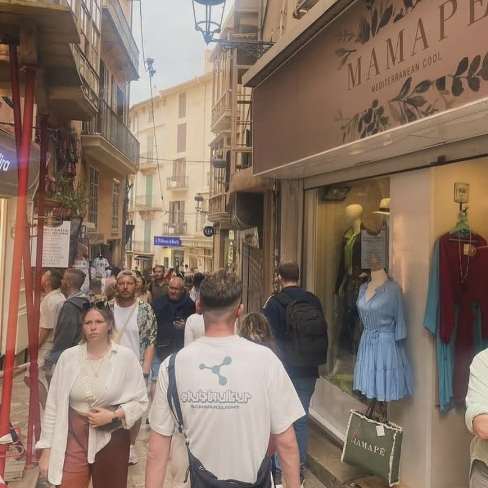

01
The hero
A six-second film you scrub rather than watch — 145 frames painted to a canvas
2026Independent web design studioEst. Galway
We build the presence your brand should have had all along.
01 — The premise
Every brand
starts at naught.
A blank field. No traffic, no trust, no reason to stay. What happens next is a design problem, and we solve it in public.
02 — The method
03 — The result
Ten.
Fully realised. Every surface considered, every interaction accounted for, nothing left at a default.
—Manifesto
Most websites are assembled. We would rather compose one: a single idea, carried without compromise from the first grid line to the last frame of motion, until the thing feels inevitable.
—Services
Ten disciplines, run in sequence.
Take the whole climb or join it anywhere.
All ten in detail →
—Point of view
A website is the only part of a brand that answers back.
Print sits still. A campaign runs and stops. The site is the one surface a customer touches, argues with and returns to — so it earns the same care as everything else, and then some.
—Process
Two or three days. We read everything you have, talk to the people who use it, and come back with a position you can argue in one sentence.
About a week. Look and direction land together, tested on the hardest page rather than a mood board. You see real screens early.
Two weeks. Design and front-end run together. Motion is prototyped in the browser, never faked in a video.
Two or three days. Performance checked, everything handed over, and you shown how to run it. Then we stay reachable.
—Selected
One project, and it is this one. Scroll on.
A six-second film you scrub rather than watch — 145 frames painted to a canvas
2026Naught to ten, ticking in lockstep with the pull-back
2026Ten services, pinned, advancing one row at a time as you scroll
202616.6s to 5.7s on 3G. No cookies, no trackers, nothing from anyone else
2026Read how it
was built.
—Founder

I started this because a good
business should never be let
down by its own website.
I'm a Galway native — born here, based here, and still working a few minutes from where I grew up. Mervue is home. Most of the people I build for are close enough to meet over a coffee rather than a calendar invite, and I think that shows in the work.
What I actually love is the moment an owner sees their own idea reflected back at them properly for the first time. Nearly everyone I work with is excellent at what they do and badly served by how they look online. Closing that gap is the entire job, and it never stops being satisfying.
Naught to Ten came out of that. One person accountable from the first conversation to the last deployment — no handoffs, no account layer, nobody to hide behind. If it ships with my name on it, I drew it and I built it.
Off the desk@jozua.wav ↗


—Studio
Naught to Ten is a founder-led studio in Galway. There is no account layer and no junior pass — the person who pitches the work is the person who draws and builds it. We take two or three projects at a time, which is the honest limit of doing this properly.
Check availability—Enquiries
Tell us where the brand is now. We reply to everything within two working days, with a real opinion rather than a calendar link.